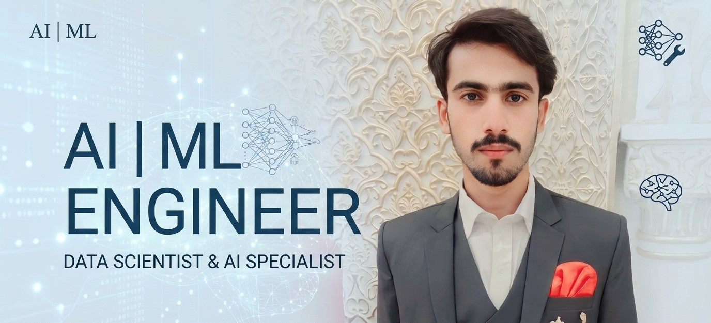
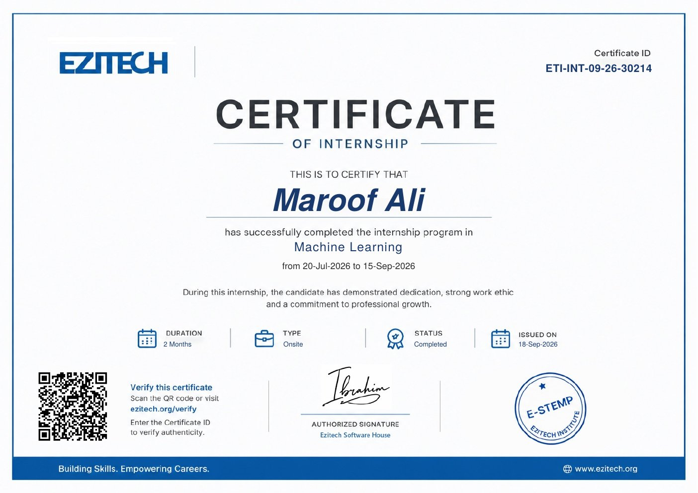
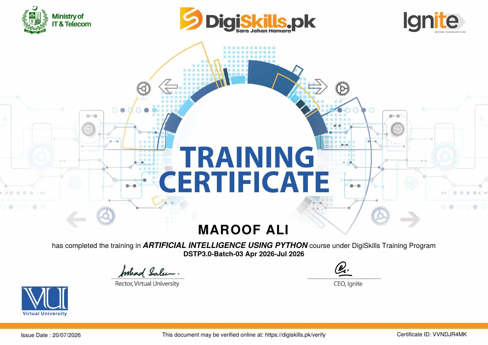
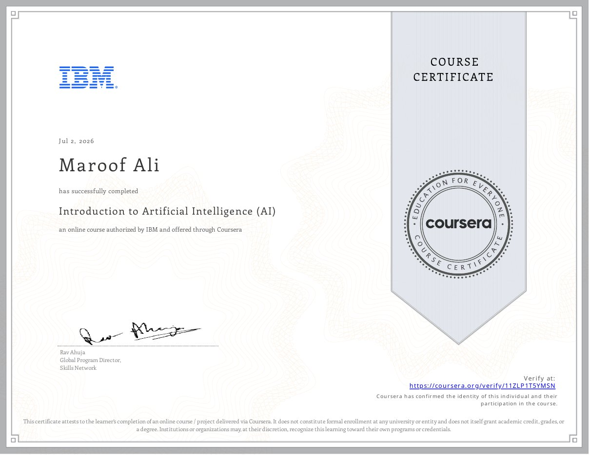
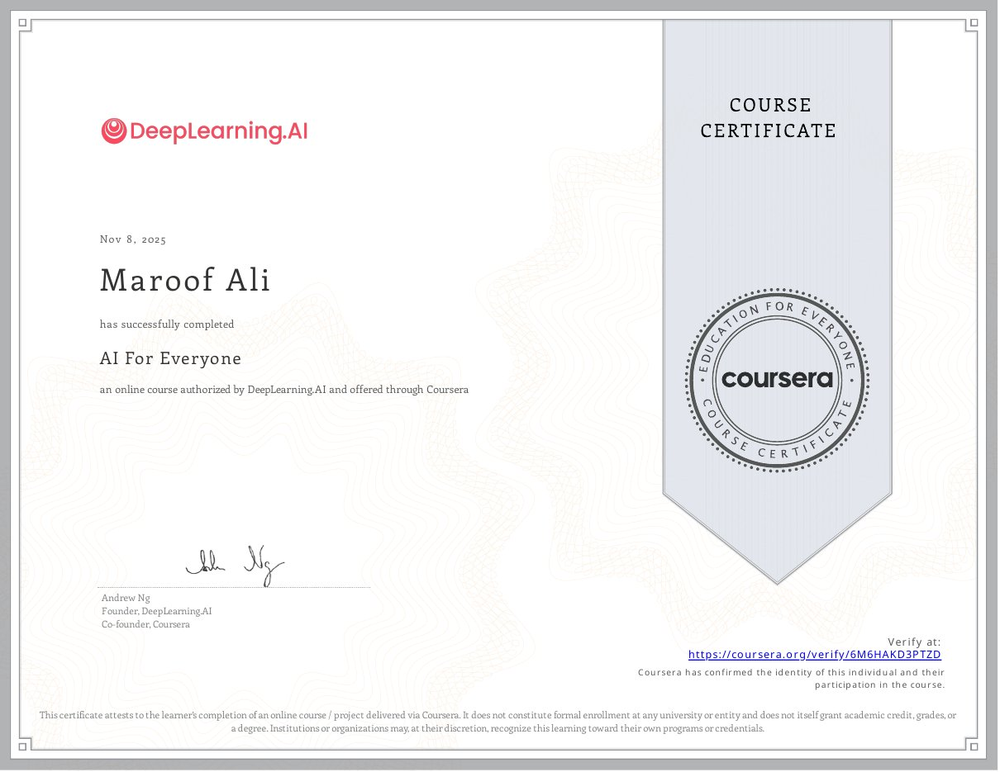

BS Computer Science candidate · Machine Learning & AI · Islamabad, Pakistan
I am a final-year BS Computer Science student at Iqra University, Islamabad (CGPA 3.32/4.0). I began in web development with PHP and Laravel, then moved into machine learning and data science, where I now focus on building complete, evaluated solutions: from exploratory analysis and feature engineering to model training, interpretation and deployment.
My final year project applies machine learning to a medical diagnostic problem: detecting dengue fever from Raman spectra, delivered as a full web application. I have completed my Machine Learning internship at EZITECH, and I am looking for internship, scholarship and graduate research opportunities in AI and machine learning.
Major: Object-Oriented Programming, Data Structures, Database Management Systems, Design & Analysis of Algorithms, Machine Learning, Artificial Intelligence.
Minor: Calculus, Discrete Structures, Statistics and Probability.

A web-based diagnostic platform that classifies dengue infection from serum Raman spectra, using PCA for dimensionality reduction and LDA for classification. The data comes from KRL Hospital Islamabad, obtained through my supervisor. The system is built as a complete product rather than a standalone notebook.
Reference paper (Amin et al., J. Raman Spectrosc., 2017; PCA-LDA, 60 subjects): 96.5% accuracy.
ResNet50V2 transfer learning on CIFAR-10: 84.91% test accuracy (97.11% top-3) against a 74.20% from-scratch CNN baseline. Includes Grad-CAM interpretability and a Streamlit app.
Four-block CNN built from scratch on chest X-rays: 88% accuracy on 624 test images and 96% recall on pneumonia, with a Flask drag-and-drop app.
Retrieval-augmented question answering with Pinecone vector search, Groq/Llama answers and a Tesseract OCR fallback for scanned files.
TF-IDF and Word2Vec features with a LinearSVC classifier at about 99% accuracy, after finding and fixing a data leakage issue caused by wire-service source tags in real news articles. Deployed with Streamlit.
DistilBERT fine-tuned for sentiment, GPT-2 text generation and HuggingFace named-entity recognition in one Streamlit app.
Employee attrition prediction with XGBoost and decision-threshold optimization, shown in an interactive Streamlit dashboard.
K-Means (K=4) on RFM features from the UCI Online Retail dataset, with outlier handling, PCA and cluster profiling, delivered as an interactive Streamlit and Plotly dashboard.
Voice assistant built with Flask and the Groq API, hosted on PythonAnywhere.
Playwright scraper with proxy rotation, pandas cleaning of prices and ratings, CSV export and analysis charts.
Full-stack Django application with a Neon PostgreSQL backend, deployed on Vercel.
Linear regression with R² of 0.79; identified and fixed a data leakage issue in the preprocessing pipeline.
Log transforms, interaction terms and multicollinearity checks, reaching an R² of 0.77.
Logistic regression with a complete EDA, preprocessing and evaluation pipeline.
Analysis of 1,000+ teens with an engineered age-group feature and 8 visualization types examining predictors of depression.
Analysis of 74 matches, finding a 48.65% toss-win correlation, with 10+ visualizations of team and player performance.
Code and notebooks: github.com/maroofrind124-sys



Open to internships, entry-level roles, research collaborations and scholarship opportunities in AI and machine learning.